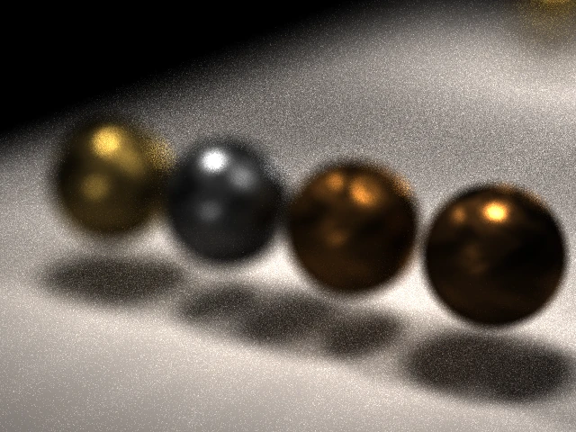
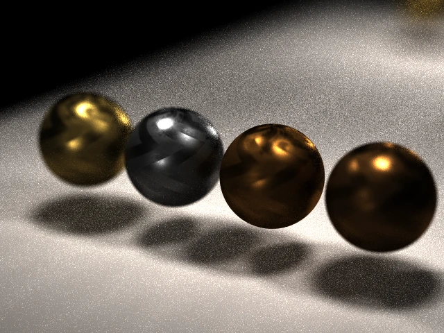
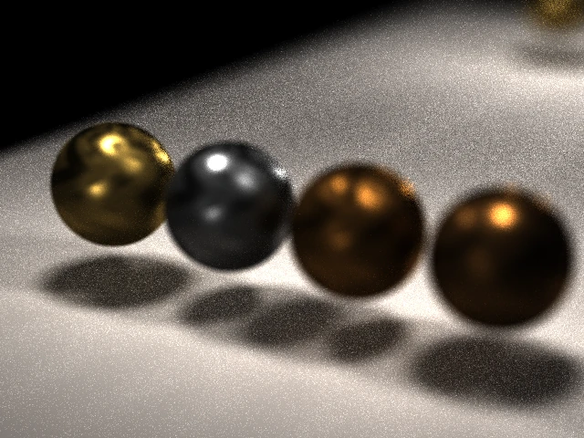
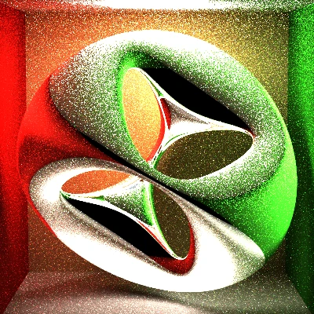
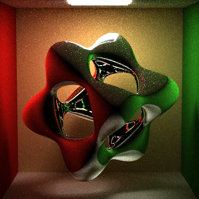
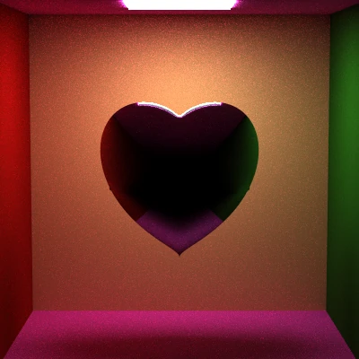

CPU Path Tracer
This project is from Advanced Interactive Computer Graphics course. (This is a school project)
The goal of this course is to build Path tracer from an empty QT project. Most of the features refer to the book Physically Based Rendering: From Theory to Implementation (3rd)
All Features
- Monte Carlo Estimation
- Micro-facet BRDF
- Multiple Importance Sampling
- Bounding Volume Hierarchy
- KD-tree
- Photon Mapping
- Depth Of Field
- Various Light Sources
- Complex Implicit Surfaces
Multiple Importance Sampling

< Cornell box with Multiple Importance Sampling >
Micro-facet BRDF


Photon Mapping

< Cornell box with Photon Mapping >
Depth Of Field
  


Various Light Sources


Projection Light
Complex Implicit Surfaces
  
< Chair >
< Tanglecube >
< Heart >


Custom Scenes